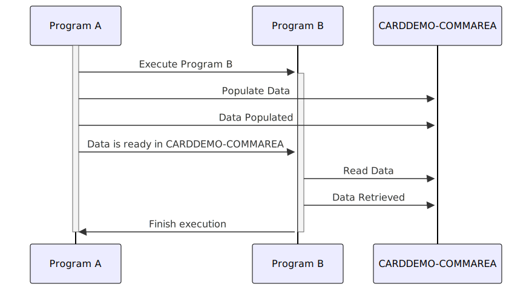

–CONTENT TO TRANSLATE– Gerado em: 1º de outubro de 2024
Título do Documento: Especificação da Área de Comunicação da Aplicação CardDemo
Descrição Resumida:
Este documento descreve a estrutura e função do CARDDEMO-COMMAREA, uma estrutura de dados padronizada usada para comunicação entre diferentes programas dentro da aplicação CardDemo. Esta área de comunicação garante a troca de dados sem interrupções e mantém a integridade dos dados em todo o sistema de gerenciamento de cartão de crédito.
Histórias de Usuário: Como desenvolvedor, preciso de uma maneira padronizada de passar dados entre diferentes programas COBOL dentro da aplicação CardDemo para garantir um fluxo de informações tranquilo e manter a consistência dos dados.
Épico Relacionado: 9 - Utilitários do Sistema
Requisitos Técnicos:
CARDDEMO-COMMAREA é definido como uma estrutura de dados COBOL (nível 01) para armazenar várias informações.05) para agrupar logicamente dados relacionados:
CDEMO-GENERAL-INFO: Informações gerais sobre a transação.CDEMO-CUSTOMER-INFO: Dados específicos do cliente.CDEMO-ACCOUNT-INFO: Detalhes relacionados à conta.CDEMO-CARD-INFO: Informações do cartão de crédito.CDEMO-MORE-INFO: Campos adicionais para controle de fluxo do programa.CDEMO-USER-ID).PIC) especificando se ele armazena dados alfanuméricos (X) ou numéricos (9).(04), (08), etc.) indicando o número de caracteres ou dígitos que o campo pode conter.88:
CDEMO-USER-TYPE pode ser CDEMO-USRTYP-ADMIN ('A') ou CDEMO-USRTYP-USER ('U').CARDDEMO-COMMAREA.CARDDEMO-COMMAREA, normalmente alcançado passando-o como um parâmetro na chamada do programa.Modelos Relacionados:
CARDDEMO-COMMAREA:
CDEMO-FROM-TRANID String: ID da transação do programa de envio.CDEMO-FROM-PROGRAM String: Nome do programa do remetente.CDEMO-TO-TRANID String: ID da transação do programa receptor.CDEMO-TO-PROGRAM String: Nome do programa do receptor.CDEMO-USER-ID String: ID do usuário que está iniciando a transação.CDEMO-USER-TYPE String: Tipo de usuário (Administrador ou Regular).CDEMO-PGM-CONTEXT Integer: Contexto de entrada/reentrada do programa.CDEMO-CUST-ID Integer: Identificador exclusivo do cliente.CDEMO-CUST-FNAME String: Primeiro nome do cliente.CDEMO-CUST-MNAME String: Nome do meio do cliente.CDEMO-CUST-LNAME String: Sobrenome do cliente.CDEMO-ACCT-ID Integer: Identificador exclusivo da conta.CDEMO-ACCT-STATUS String: Status atual da conta.CDEMO-CARD-NUM Integer: Número do cartão de crédito associado à conta.CDEMO-LAST-MAP String: Nome do último mapa usado.CDEMO-LAST-MAPSET String: Último conjunto de mapas usado.Configurações:
CDEMO-FROM-TRANID, CDEMO-FROM-PROGRAM, CDEMO-TO-TRANID e CDEMO-TO-PROGRAM corretamente.CDEMO-USRTYP-ADMIN ('A') e CDEMO-USRTYP-USER ('U') deve ser bem documentado e usado de forma consistente em toda a aplicação.Melhorias de Código:
CARDDEMO-COMMAREA.Melhorias de Segurança:
CARDDEMO-COMMAREA para protegê-las durante o trânsito entre os programas.Diagrama Conceitual:
–Made by “Smart Engineering” (by Compass.UOL)–